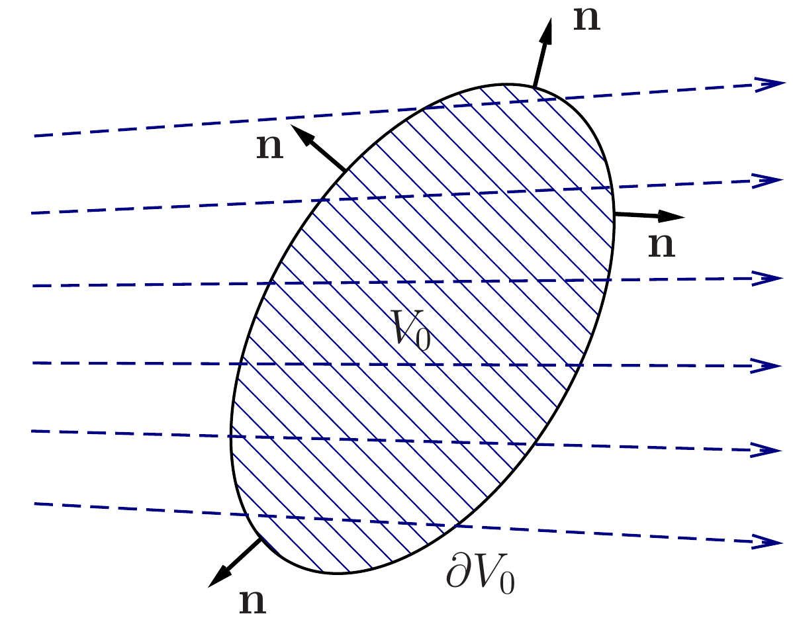

10 How to describe fluids
You find content related to this lecture in the textbooks:
- Batchelor (2000) section 2.1
- Acheson (1990) section 1.2
- Paterson (1983) chapter 3 and sections 4.1, 4.2
- Bernard (2015) chapters 1, 2, 10
10.1 Fluid flow
Fluids are considered as continuous media, i.e. any small volume element of a fluid (a `fluid particle’) contains a huge number of molecules. Instead of describing the location and velocity of all the individual molecules, we work with quantities which should be thought of as averages over very small neighbourhoods.
So we describe the distribution of matter via a smooth density function \(\rho(x,y,z,t)\) (mass/volume) and its motion via a smooth velocity field \(\underline{u}(x,y,z,t)\).
The fluid velocity is a vector field, which means that it is a vector whose direction and magnitude may be different at different points in space: \[\begin{split} \underline{u}(x,y,z,t) &=(u_x(x,y,z,t),u_y(x,y,z,t),u_z(x,y,z,t))\\ &= u_x(x,y,z,t) \underline{e}_x + u_y(x,y,z,t) \underline{e}_y + u_z(x,y,z,t) \underline{e}_z . \end{split} \tag{10.1}\] We will also use the shorthand \(\underline{u}(\underline{x},t)\) where \(\underline{x}=(x,y,z)\) is the position vector.
We will sometimes be looking at particular simple kinds of flows:
- Steady flow: \(\partial_t\underline{u} =0\), i.e. \(\underline{u}(\underline{x},t)=\underline{u}(\underline{x})\).
- Two-dimensional (2D) flow: \(\partial_z\underline{u} =0\) and \(u_z=0\), i.e. \(\underline{u}(\underline{x},t)=u_x(x,y,t)\underline{e}_x + u_y(x,y,t)\underline{e}_y=(u_x(x,y,t),u_y(x,y,t),0)\).
A vector field can be visualised by drawing vectors attached to different points in space. In the video lecture we work through the sketch of the velocity field for the 2D flow \(\underline{u}=(-y,x,0)\).
10.2 Pathlines and streamlines
We want to answer the question: given the velocity field \(\underline{u}(\underline{x},t)\), how does a fluid particle (i.e. a very small volume element of the fluid or a small particle embedded in the fluid) move?
10.2.1 Pathlines
Let \(\underline{x}(t)\) be the position of a fluid particle in the flow with the velocity \(\underline{u}(\underline{x},t)\) at time \(t\). Then it must satisfy the vector ODE \[ \frac{d\underline{x}(t)}{dt}=\underline{u}(\underline{x}(t),t). \tag{10.2}\] Equivalently, we can write this vector ODE as a system of three scalar ODEs: \[\begin{split} \frac{dx(t)}{dt}&=u_x(x(t),y(t),z(t),t)\\ \frac{dy(t)}{dt}&=u_y(x(t),y(t),z(t),t)\\ \frac{dz(t)}{dt}&=u_z(x(t),y(t),z(t),t) \end{split} \tag{10.3}\]
Example 10.1 Find the pathlines for the 2D flow \(\underline{u}=(-y,x,0)\).
Solution. We solve the ODEs \[ \frac{dx(t)}{dt}=-y(t), \quad \frac{dy(t)}{dt}=x(t), \quad \frac{dz(t)}{dt}=0. \tag{10.4}\] The general solution of this system is \[\ x(t)=A\sin t + B\cos t, ~~~ y(t)=- A\cos t +B\sin t,~~~z(t)=C \tag{10.5}\] for some constants \(A,B,C\). If we have initial conditions \(x(0)=x_0\), \(y(0)=y_0\) and \(z(0)=z_0\), we find that \(B=x_0\), \(A=y_0\) and \(C=z_0\). Thus, we have \[\begin{split} x(t)&=-y_0 \sin t + x_0\cos t,\\ y(t)&=y_0\cos t + x_0 \sin t,\\ z(t)&= z_0. \end{split} \tag{10.6}\] It is clear now that the pathline starting at \((x_0,y_0)\) is a circle of radius \(\sqrt{x_0^2+y_0^2}\).
Next we look at an example of a non-steady flow.
Example 10.2 We consider the 2D flow \(\underline{u}=(x,t,0)\). In the video lecture we sketch this velocity field at \(t=0\) and \(t=1\).
To find the pathlines we solve the ODEs \[ \frac{dx(t)}{dt}=x(t), \quad \frac{dy(t)}{dt}=t, \quad \frac{dz(t)}{dt}=0. \tag{10.7}\] The solution of this system with initial values \(\underline{x}(0)=(x_0,y_0,z_0)\) is \[ x(t)=x_0e^t, ~~~ y(t)=\frac12 t^2 y_0,~~~z(t)=z_0. \tag{10.8}\]
10.2.2 Streamlines
A streamline of a flow is a curve such that, at each point of the curve, the tangent line to it is parallel to the velocity at the same point. If the velocity field depends on time, then streamlines may be different at different moments of time. Let \(\underline{u}(\underline{x},t)\) be a velocity field. It follows from this definition that if \(\underline{x}(s)=(x(s),y(s),z(s))\) is a parametrisation of a streamline (with some parameter \(s\) along the streamline), then the tangent vector to the curve, \(d\underline{x}(s)/ds\), must be parallel to \(\underline{u}(\underline{x}(s),t)\). This means \[ \frac{d\underline{x}(s)}{ds}=\lambda \, \underline{u}(\underline{x}(s),t) \tag{10.9}\] where \(\lambda\) is a nonzero scalar which may depend on both \(\underline{x}\) and \(t\). Clearly, there is a freedom in choosing \(\lambda\). The simplest choice that we shall use from now on is \(\lambda=1\). So, the streamlines are solutions of the vector ODE \[ \frac{d\underline{x}(s)}{ds}=\underline{u}(\underline{x}(s),t) \tag{10.10}\] or \[\begin{split} \frac{dx(s)}{ds}&=u_x(x(s),y(s),z(s),t),\\ \frac{dy(s)}{ds}&=u_y(x(s),y(s),z(s),t),\\ \frac{dz(s)}{ds}&=u_z(x(s),y(s),z(s),t). \end{split} \tag{10.11}\]
So in Example 10.2 the ODEs for the streamlines are \[ \frac{dx(s)}{ds}=x(s), \quad \frac{dy(s)}{ds}=t, \quad \frac{dz(s)}{ds}=0. \tag{10.12}\] The solution of this system for the streamline starting at \(\underline{x}(0)=(x_0,y_0,z_0)\) is \[ x(s)=x_0e^s, ~~~ y(t)=\frac12 st+ y_0,~~~z(t)=z_0. \tag{10.13}\] Note that this is different from the pathlines that we determined for Example 10.2
For steady flows (\(\underline{u}=\underline{u}(\underline{x})\)) streamlines coincide with pathlines, because Eq. 10.11 will be exactly the same as Eq. 10.3, with \(s=t\).
10.3 Material derivative
Let \(f(\underline{x},t)\) be some quantity of interest (e.g. a component of the velocity \(\underline{u}\) or the density of the fluid \(\rho\)). The rate of change of \(f\) at a fixed point in space (i.e. at fixed \(\underline{x}\)) is \(\partial_t f(\underline{x},t)\). What is the rate of change of \(f\) following the fluid (i.e. the rate of change of \(f\) at a fixed fluid particle as it moves with the fluid)? We denote this as \(Df/Dt\) and will refer to it as the material derivative of \(f\). We have \[\begin{split} \frac{Df}{Dt} &= \frac{d}{dt} \, f(x(t),y(t),z(t),t)\\ &=\partial_t f(x,y,z,t)+\partial_x f(x,y,z,t)\, \frac{dx}{dt}\\ &\qquad\qquad +\partial_y f(x,y,z,t)\, \frac{dy}{dt} +\partial_z f(x,y,z,t)\, \frac{dz}{dt}\\ &=\partial_t f(x,y,z,t)+\partial_x f(x,y,z,t)\, u_x\\ &\qquad\qquad +\partial_y f(x,y,z,t)\, u_y +\partial_z f(x(t),y,z,t)\, u_z \\ &=\partial_t f(\underline{x},t)+\underline{u}\cdot\nabla f(\underline{x},t). \end{split} \tag{10.14}\] Thus, we have \[ \frac{Df}{Dt} = \partial_t f +\underline{u}\cdot\nabla f. \tag{10.15}\]
In particular, \(Df/Dt=0\) means that quantity \(f\) is a constant for each fluid particle.
Example 10.3 Assume the temperature of the fluid is given by \(T(x,z,y,t) =-y\) and the velocity field is \(\underline{u}=(-y,x,0)\). So there is no time dependence in either the temperature nor in the velocity field. Nevertheless a fluid particle is going to experience a time-dependent temperature because \[\begin{split} \frac{DT}{Dt}&=\partial_tT+u_x\partial_xT+u_y\partial_yT+u_z\partial_zT\\ &=u_y\partial_yT=-x=y_0\sin t-x_0\cos t. \end{split} \tag{10.16}\] We used the expression for \(x(t)\) from Eq. 10.6.
10.3.1 Acceleration of a fluid particle
The velocity of a fluid particle (whose position at time \(t\) is \(\underline{x}(t)\)) is \(\underline{u}(\underline{x}(t),t)\). To find acceleration of this fluid particle, \(\underline{a}(\underline{x}(t),t)\), we need to differentiate the velocity with respect to time. Thus \[ \underline{a}(\underline{x},t) =\frac{d\underline{u}(\underline{x}(t),t)}{dt}= \frac{D \underline{u}}{Dt} =\partial_t \underline{u} + (\underline{u}\cdot\underline{\nabla}) \underline{u} . \tag{10.17}\]
If we calculate the acceleration in Example Example 10.2 where \(\underline{u}=(x,t,0)\) we get the acceleration \[\begin{split} \underline{a}(\underline{x},t) &=\frac{D \underline{u}}{Dt}=\partial_t \underline{u} + x\,\partial_x \underline{u} +t\,\partial_y \underline{u} +0\,\partial_z \underline{u} \\ &=(0,1,0)+x(1,0,0)=(x,1,0) . \end{split} \tag{10.18}\]
10.4 Conservation of mass
Let \(\rho(\underline{x},t)\) be the density of the fluid, i.e. the mass of the fluid per unit volume. The density is strictly positive: \(\rho(\underline{x},t)> 0\) for all \(\underline{x}\) and \(t\). We shall deduce an equation governing the evolution of \(\rho\) from the law of conservation of mass.
Consider an arbitrary fixed (in space) volume \(V\). The mass of the fluid in this volume is \[ \int\limits_{V}\rho(\underline{x},t)\,dV. \tag{10.19}\] Here \(dV\) is the volume element (i.e. \(dV=dx \, dy\, dz\)). Let \(\partial V\) be the boundary of \(V\) and \(\underline{n}\) be the outward unit normal on \(\partial V\) (see Figure 10.1). The rate at which mass of the fluid is flowing through a surface element \(dS\) on \(\partial V\) is \(\rho \underline{u}\cdot\underline{n} \, dS\) (i.e. the normal component of the mass flux density \(\rho \underline{u}\) multiplied by the area \(dS\) of the surface element). If \(\underline{u}\cdot\underline{n}\) is positive, then the fluid flows out of volume \(V\) through the surface element \(dS\). If \(\underline{u}\cdot\underline{n}\) is negative, then the fluid flows into \(V\). So, the net rate at which mass is flowing out of \(V\) though the boundary of \(V\) is \[ \oint\limits_{\partial V}\rho \underline{u}\cdot\underline{n} \, dS . \tag{10.20}\] If this integral is positive, this means that more fluid flows out than in; if it is negative, then more fluid flows in than out.

The rate of change of mass in volume \(V\) is the derivative with respect to time of the integral in Eq. 10.19. In view of to the law of conservation of mass, it must be equal to the change of mass (per unit time) due to the inflow and outflow of the fluid. Therefore, we obtain \[ \frac{d}{dt} \, \int\limits_{V}\rho \, dV = \int\limits_{V}\partial_t\rho \, dV= -\oint\limits_{\partial V}\rho \underline{u}\cdot\underline{n} \, dS . \tag{10.21}\] Here the minus before the surface integral appears because \(\underline{n}\) is chosen to be the outward normal (so that the change of mass is negative if the fluid flows out of \(V\)).
Theorem 10.1 (Divergence theorem) Now, we need to recall the divergence theorem (also known as the Gauss-Ostrogradsky theorem) of Vector Calculus. If \(V\) is a region in \(\mathbb{R}^3\) with boundary \(\partial V\) and \(\underline{F}(\underline{x})\) is a vector field defined in \(V\), then \[ \int\limits_{V} \nabla\cdot \underline{F} \, dV = \oint\limits_{\partial V} \underline{F}\cdot \underline{n} \, dS. \tag{10.22}\]
Applying the divergence theorem to the surface integral on the right hand side of Eq. 10.21, we obtain \[ \int\limits_{V} \partial_t \rho \, dV = -\int\limits_{V} \nabla\cdot (\rho \, \underline{u}) \, dV, \tag{10.23}\] which we can rewrite as \[ \int\limits_{V} \left[\partial_t \rho + \nabla\cdot (\rho \, \underline{u})\right]\, dV = 0. \tag{10.24}\] The last integral must be zero for any volume \(V\). This is possible only if the integrand is zero. So, we conclude that \[ \partial_t \rho + \nabla\cdot (\rho \, \underline{u}) =0 . \tag{10.25}\] Eq. 10.25 is a conservation equation for the mass, which is also known as the continuity equation.
Note that since \(\nabla\cdot (\rho \, \underline{u})= \underline{u}\cdot\nabla\rho + \rho \, \nabla\cdot\underline{u}\), the equation of continuity can be written as \[ \partial_t \rho + \underline{u}\cdot\nabla\rho + \rho \, \nabla\cdot\underline{u} =0 \tag{10.26}\] or \[ \frac{D\rho}{Dt} + \rho\, \nabla\cdot\underline{u} =0 . \tag{10.27}\] It the density of each fluid element remain constant as the fluid moves, i.e. \[ \frac{D\rho}{Dt} =0 , \tag{10.28}\] then it follows from Eq. 10.27 that \[ \nabla\cdot\underline{u} =0 . \tag{10.29}\] In this case, the fluid is called incompressible and Eq. 10.29 is known as the incompressibility condition. 1
1 A vector field \(\underline{u}\) satisfying \(\nabla\cdot\underline{u}\) is known as a solenoidal vector field or a divergence-free vector field.